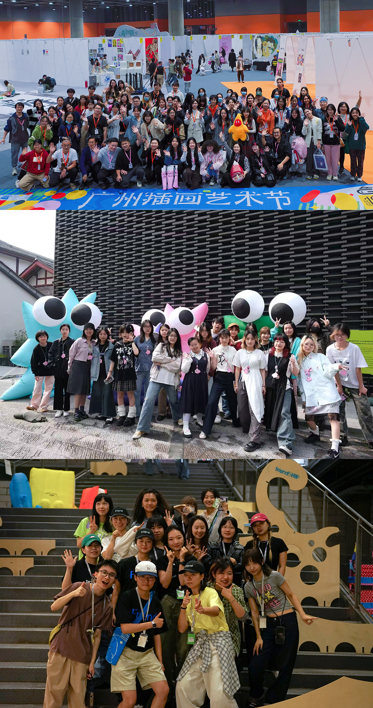

Experience.

Beijing
Shanghai
Suzhou
Shenzhen
Zhaotong
Frankfurt
Paris
London
Oakland
Iowa
Collaboration
2025/10
2024/03 FULL TIME 灵魂当家概念店
SOULPAPER
(成都·深圳)
2024/03 FULL TIME 灵魂当家概念店
SOULPAPER
(成都·深圳)
2023/10
2022/08 FULL TIME ART23
(广州)
2022/08 FULL TIME ART23
(广州)
2026
2023 PART TIME (广州·成都·深圳)
2023 PART TIME (广州·成都·深圳)

Vivienne Westwood Cafe
深圳市罗湖区万象城1期
咖啡师
Barista
2025/12 -
BIGGER HOUSE 快闪店
深圳市南山区海上世界
门店销售
Sales
2025/10 - 12
Open M Art Fair (abC)
深圳市南山区G&G创意社区
展览执行
Execution
2025/11
Yes! Art Festival 野生青年艺术节
成都市青羊区木木美术馆
展览执行
Execution
2024/03
GAF 广州插画艺术节
广州市海珠区保利世界贸易中心
布展助理
Assistant
2023/10 - 12